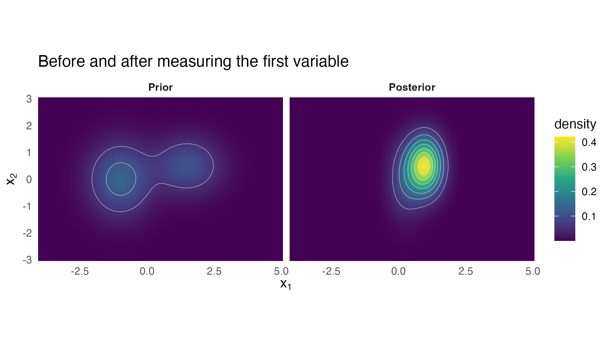
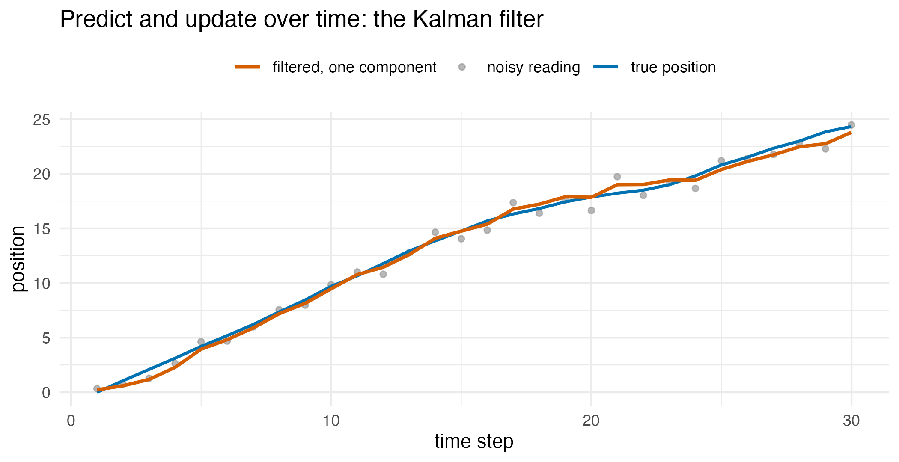
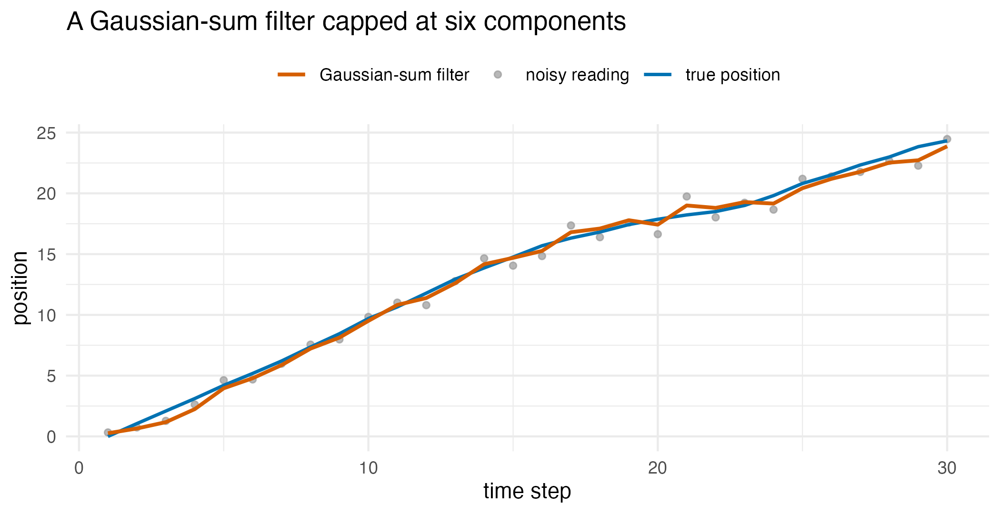

The closed-form operator calculus on a mixture
Source:vignettes/operator_calculus.Rmd
operator_calculus.Rmd
has_ggplot2 <- requireNamespace("ggplot2", quietly = TRUE)The problem
A Gaussian mixture, a weighted sum of a few normal distributions, can describe uncertain quantities whose distribution has several peaks or an unusual shape. Once you have such a mixture, the next steps of an analysis are often simple operations. You may pass the quantities through a measuring device, update them after a new measurement, add some of them together, or fix some of them at known values. When the quantities change over time, these steps repeat at every time point. Tracking a changing quantity from a series of noisy measurements in this way is called filtering.
For a single normal distribution, each of these operations has an exact formula. The Kalman filter (Kalman, 1960), the standard method for tracking a quantity over time, is built from these formulas. This vignette shows which operations stay exact for a mixture. It checks each one against a calculation written out by hand, and it compares the resulting filter with established filtering packages.
Package capabilities
-
gmm()builds a mixture from its weights, means and covariance matrices. A covariance matrix holds the variance of each variable and the covariance of each pair of variables. -
gmm_affine()passes a mixture through a linear map with added normal noise, . The variables are multiplied by a matrix and shifted by a vector , and normal noise is added.gmm_aggregate()applies the same map when adds up groups of variables. -
gmm_observe()updates a mixture after a noisy measurement of some combination of its variables. It applies the update step of the Kalman filter to each component and reweights the components by how well each one predicted the measurement. -
gmm_marginalise()gives the distribution of some of the variables on their own.gmm_conditionalise()andgmm_missing()give the distribution of the other variables when some are known exactly. -
gmm_reduce()merges components until at mostk_maxremain. -
gmm_filter()runs a whole filter in one call.
Each of these functions returns a mixture. The output of one can therefore be passed straight to the next. With one component, the formulas are the standard ones for the normal distribution (Murphy, 2012, ch. 4). With more components, the formulas apply to each component, and some operations also change the weights. The mixture approximation of van der Hoek and Elliott (2024) was motivated by Kalman-type filtering of non-linear models.
A Gaussian kernel density estimate is also a mixture, with one component per data point. Every operation on it keeps all of those components. A set of simulated draws supports these operations only approximately.
Addressing the problem
set.seed(20260514)Pass the mixture through a sensor
Suppose a sensor reports both variables and their sum, each with a little normal noise of variance 0.05. In the notation above, , where has covariance matrix .
A_sensor <- matrix(
c(1, 0,
0, 1,
1, 1),
nrow = 3L, byrow = TRUE
)
b_sensor <- c(0, 0, 0)
R_sensor <- 0.05 * diag(3)
g_pushed <- gmm_affine(
g_prior, A_sensor, b_sensor, noise_cov = R_sensor
)Each component keeps its weight. A component with mean and covariance matrix gets the mean and the covariance matrix , where is the transpose of . The code below computes both by hand for comparison.
mu_hand <- lapply(g_prior@means, function(mu) {
as.numeric(A_sensor %*% mu + b_sensor)
})
cov_hand <- lapply(g_prior@covariances, function(s) {
A_sensor %*% s %*% t(A_sensor) + R_sensor
})
affine_gap <- max(
abs(unlist(g_pushed@means) - unlist(mu_hand)),
abs(unlist(g_pushed@covariances) - unlist(cov_hand)),
abs(g_pushed@weights - g_prior@weights)
)Update after a noisy measurement
Now the first variable is measured as 0.8, with noise of variance 0.25.
A_obs <- matrix(c(1, 0), nrow = 1L)
g_post <- gmm_observe(
g_prior, A = A_obs, y = 0.8, noise_cov = matrix(0.25, 1L, 1L)
)
g_post
#> <observe(gmm)>: K = 2 components in p = 2 dimensions
#> [1] w = 0.2338, |mu| = 0.2706, tr(Sigma) = 0.9765
#> [2] w = 0.7662, |mu| = 1.1039, tr(Sigma) = 0.6842Each weight is multiplied by the normal density of the measurement with mean and variance , which are the mean and variance of the measurement that component predicts. The weights are then rescaled to sum to one. The mean and covariance matrix of each component are updated by the Kalman formulas.
grid <- expand.grid(
x = seq(-4, 5, length.out = 80L),
y = seq(-3, 3, length.out = 60L)
)
gm <- as.matrix(grid)
long <- rbind(
data.frame(x = grid$x, y = grid$y, d = dgmm(gm, g_prior), part = "Prior"),
data.frame(
x = grid$x, y = grid$y, d = dgmm(gm, g_post), part = "Posterior"
)
)
long$part <- factor(long$part, levels = c("Prior", "Posterior"))
ggplot2::ggplot(long, ggplot2::aes(x, y)) +
ggplot2::geom_raster(ggplot2::aes(fill = d), interpolate = TRUE) +
ggplot2::geom_contour(
ggplot2::aes(z = d), colour = "white", linewidth = 0.2,
alpha = 0.6, bins = 8L
) +
ggplot2::facet_wrap(~ part) +
ggplot2::coord_equal(expand = FALSE) +
ggplot2::scale_fill_viridis_c(name = "density") +
ggplot2::labs(
x = expression(x[1]), y = expression(x[2]),
title = "Before and after measuring the first variable"
) +
ggplot2::theme_minimal(base_size = 11) +
ggplot2::theme(
strip.text = ggplot2::element_text(face = "bold"),
panel.grid = ggplot2::element_blank()
)
The mixture before (prior) and after (posterior) the first variable is measured as 0.8. The right-hand component, centred at , is closer to the measurement, and its weight rises from 0.4 to 0.766. Within each component, the variance of shrinks and the mean of moves toward the measurement. The covariance matrices are diagonal, so the mean and variance of in each component do not change.
Check the update against the Kalman formulas
With one component, gmm_observe() should give exactly
the Kalman update. The code below writes the Kalman update out by hand,
so the comparison does not rely on arithmetic done by the package.
g_single <- gmm(
weights = 1, means = list(c(0, 0)),
covariances = list(diag(c(1, 2)))
)
g_one_obs <- gmm_observe(
g_single, A = matrix(c(1, 0), nrow = 1L), y = 0.5,
noise_cov = matrix(0.5, 1L, 1L)
)
s_prior <- diag(c(1, 2))
h_obs <- matrix(c(1, 0), nrow = 1L)
r_obs <- matrix(0.5, 1L, 1L)
s_innov <- h_obs %*% s_prior %*% t(h_obs) + r_obs
gain <- s_prior %*% t(h_obs) %*% solve(s_innov)
mu_kalman <- as.numeric(gain * 0.5)
cov_kalman <- s_prior - gain %*% h_obs %*% s_prior
kalman_gap <- max(
abs(mu_kalman - g_one_obs@means[[1L]]),
abs(cov_kalman - g_one_obs@covariances[[1L]])
)
ridge_default <- 1e-6By default, gmm_affine() and gmm_observe()
add
to the diagonal of every covariance matrix they return. This small
addition, called a ridge, keeps each matrix a valid covariance matrix
when rounding errors would otherwise make it invalid. The argument
ridge_eps = 0 leaves it out.
Add variables together
Adding variables together is also a linear map. The matrix below
turns three variables into two: the sum of the first two, and the third
on its own. gmm_aggregate() applies it.
g_fine <- gmm(
weights = c(0.3, 0.4, 0.3),
means = list(c(0, 0, 0), c(2, 1, -1), c(-1, -1, 2)),
covariances = list(diag(3), diag(3), diag(3))
)
A_agg <- matrix(
c(1, 1, 0,
0, 0, 1),
nrow = 2L, byrow = TRUE
)
g_coarse <- gmm_aggregate(g_fine, A_agg)
weights_kept <- max(abs(g_coarse@weights - g_fine@weights))| Component | Weight | Mean of x1 + x2 | Mean of x3 |
|---|---|---|---|
| 1 | 0.3 | 0 | 0 |
| 2 | 0.4 | 3 | -1 |
| 3 | 0.3 | -2 | 2 |
Condition on values known exactly
When some variables are known exactly, with no measurement noise, the
other variables follow their conditional distribution.
gmm_missing() takes the positions and the values of the
known variables. gmm_conditionalise() takes one vector,
with NA for each unknown variable. The two should give the
same mixture.
g_cond_index <- gmm_missing(g_prior, observed = 2L, values = 0.5)
g_cond_given <- gmm_conditionalise(g_prior, given = c(NA, 0.5))
cond_gap <- max(
abs(unlist(g_cond_index@means) - unlist(g_cond_given@means)),
abs(unlist(g_cond_index@covariances) -
unlist(g_cond_given@covariances)),
abs(g_cond_index@weights - g_cond_given@weights)
)Two measurements, in turn or together
Two measurements of different variables, taken into account one after the other, should give the same mixture as both measurements taken into account at once.
g_a <- gmm_observe(
g_prior, A = matrix(c(1, 0), nrow = 1L), y = 0.5,
noise_cov = matrix(0.25, 1L, 1L)
)
g_ab <- gmm_observe(
g_a, A = matrix(c(0, 1), nrow = 1L), y = 0.2,
noise_cov = matrix(0.25, 1L, 1L)
)
g_stack <- gmm_observe(
g_prior, A = diag(2), y = c(0.5, 0.2), noise_cov = 0.25 * diag(2)
)
compose_gap <- max(
abs(g_ab@weights - g_stack@weights),
abs(unlist(g_ab@means) - unlist(g_stack@means)),
abs(unlist(g_ab@covariances) - unlist(g_stack@covariances))
)Track an object over time
A filter repeats two steps at each time point. The predict step moves
the current belief forward in time with gmm_affine(). The
update step takes in the new measurement with
gmm_observe(). When the belief has one component, these two
steps are the Kalman filter.
The example tracks an object moving along a line. Its state is its position and its velocity. At each step the position increases by the velocity, and both pick up a little normal noise with covariance matrix . A sensor reads the position with noise of variance .
dt <- 1
A_dyn <- matrix(c(1, dt, 0, 1), 2L, 2L, byrow = TRUE)
C_obs <- matrix(c(1, 0), 1L, 2L)
Q_proc <- 0.01 * diag(2)
R_meas <- matrix(0.5, 1L, 1L)
n_steps <- 30L
truth <- matrix(0, n_steps, 2L)
truth[1L, ] <- c(0, 1)
for (k1 in 2:n_steps) {
truth[k1, ] <- as.numeric(A_dyn %*% truth[k1 - 1L, ]) +
mvnfast::rmvn(1L, c(0, 0), Q_proc)
} # ends k1, over the simulated state track
y_track <- truth[, 1L] + rnorm(n_steps, 0, sqrt(R_meas[1L, 1L]))The filter is the two operations in a loop.
g_state <- gmm(
weights = 1, means = list(c(0, 0)), covariances = list(diag(2))
)
filtered <- numeric(n_steps)
for (k1 in seq_len(n_steps)) {
if (k1 > 1L) {
g_state <- gmm_affine(
g_state, A = A_dyn, b = c(0, 0), noise_cov = Q_proc
) # predict
}
g_state <- gmm_observe(
g_state, A = C_obs, y = y_track[k1], noise_cov = R_meas
) # update
filtered[k1] <- g_state@means[[1L]][1L]
} # ends k1, over the filtering recursionThe same filter, written out by hand in its textbook form:
mu_kf <- c(0, 0)
p_kf <- diag(2)
kf_track <- numeric(n_steps)
for (k1 in seq_len(n_steps)) {
if (k1 > 1L) {
mu_kf <- as.numeric(A_dyn %*% mu_kf)
p_kf <- A_dyn %*% p_kf %*% t(A_dyn) + Q_proc # predict
}
gain_kf <- p_kf %*% t(C_obs) %*%
solve(C_obs %*% p_kf %*% t(C_obs) + R_meas) # gain
mu_kf <- mu_kf + as.numeric(gain_kf %*% (y_track[k1] - C_obs %*% mu_kf))
p_kf <- (diag(2) - gain_kf %*% C_obs) %*% p_kf
kf_track[k1] <- mu_kf[1L]
} # ends k1, over the hand-coded Kalman recursion
loop_gap <- max(abs(filtered - kf_track))
track_df <- data.frame(
t = seq_len(n_steps), truth = truth[, 1L], y = y_track,
filtered = filtered
)
ggplot2::ggplot(track_df, ggplot2::aes(t)) +
ggplot2::geom_point(
ggplot2::aes(y = y, colour = "noisy reading"), size = 1.3, alpha = 0.7
) +
ggplot2::geom_line(
ggplot2::aes(y = truth, colour = "true position"), linewidth = 0.8
) +
ggplot2::geom_line(
ggplot2::aes(y = filtered, colour = "filtered, one component"),
linewidth = 0.9
) +
ggplot2::scale_colour_manual(
name = NULL,
values = c(
"noisy reading" = "grey60",
"true position" = "#0072B2",
"filtered, one component" = "#D55E00"
)
) +
ggplot2::labs(
x = "time step", y = "position",
title = "Predict and update over time: the Kalman filter"
) +
ggplot2::theme_minimal(base_size = 11) +
ggplot2::theme(legend.position = "top")
An object moving along a line, tracked by the predict and update loop with one component, which is the Kalman filter. The points are the noisy position readings, and the two lines are the true position and the filtered estimate.
With more than one component, the same two calls run a Kalman filter
inside each component and reweight the components after each
measurement. This is the Gaussian-sum filter (Alspach and Sorenson,
1972). It can hold beliefs that one normal distribution cannot, such as
two competing guesses about where the object is. The number of
components grows when the noise is itself a mixture. A mixture process
noise multiplies the number of components in the predict step, because
gmm_affine() runs once for each noise component. A mixture
measurement noise multiplies it in the update step in the same way.
Keep the number of components small
gmm_reduce() keeps the number of components at or below
k_max. At each step it replaces the pair of components that
is cheapest to merge by one normal distribution with the same combined
weight, mean and covariance matrix. Two costs are available for choosing
the pair. With cost = "kl", it is an upper bound on the
Kullback-Leibler (KL) divergence, a measure of how different two
distributions are (Runnalls, 2007). With cost = "cs", it is
the Cauchy-Schwarz divergence, another such measure with an exact
formula for mixtures, which gmm_divergence() also
computes.
The next mixture has six components but only three clusters, because each cluster is made of two nearly identical components. It is reduced to three components.
g_six <- gmm(
weights = rep(1 / 6, 6L),
means = list(
c(-5, 0), c(-5, 0.15), c(5, 0), c(5.1, -0.1), c(0, 6), c(0.1, 6.1)
),
covariances = rep(list(0.5 * diag(2)), 6L)
)
g_three <- gmm_reduce(g_six, k_max = 3L)
mix_mean <- function(g) Reduce(`+`, Map(`*`, g@weights, g@means))
reduce_shift <- max(abs(mix_mean(g_six) - mix_mean(g_three)))
reduce_divergence <- gmm_divergence(g_six, g_three, type = "cs")| Quantity | Value |
|---|---|
| components before | 6 |
| components after | 3 |
| change in the mean of the mixture | 0.0e+00 |
| Cauchy-Schwarz divergence from the original | 2.5e-10 |
Reducing all the way to one component gives the normal distribution
with the mean and covariance matrix of the whole mixture. When a mixture
has many overlapping components, a new mixture fitted from scratch can
be closer to it than any sequence of merges. With
method = "anneal", gmm_reduce() fits a new
mixture of the requested size by the standard mixture-fitting algorithm,
expectation-maximisation, in an annealed form that is less likely to
stop at a poor fit. It keeps that mixture if it is closer to the
original than the merged one.
The whole filter in one call
gmm_filter() runs the predict, update and reduce steps
in one call. It takes the starting belief, the dynamics
(the matrix
and the process noise
),
the measurement (the matrix
and the measurement noise
),
the series of readings, and an optional cap k_max on the
number of components. With normal noise and no cap, it is the Kalman
filter. When
or
is a mixture instead of a covariance matrix, it is the Gaussian-sum
filter, reduced to at most k_max components after each
step.
prior_state <- gmm(
weights = 1, means = list(c(0, 0)), covariances = list(diag(2))
)
out_verb <- gmm_filter(
prior_state,
dynamics = list(A = A_dyn, Q = Q_proc),
measurement = list(C = C_obs, R = R_meas),
y = y_track, ridge_eps = 0
)
mu_v <- c(0, 0)
p_v <- diag(2)
kf_verb <- numeric(n_steps)
for (k1 in seq_len(n_steps)) {
mu_v <- as.numeric(A_dyn %*% mu_v)
p_v <- A_dyn %*% p_v %*% t(A_dyn) + Q_proc # predict
gain_v <- p_v %*% t(C_obs) %*%
solve(C_obs %*% p_v %*% t(C_obs) + R_meas) # gain
mu_v <- mu_v + as.numeric(gain_v %*% (y_track[k1] - C_obs %*% mu_v))
p_v <- (diag(2) - gain_v %*% C_obs) %*% p_v # update
kf_verb[k1] <- mu_v[1L]
} # ends k1, over the predict-then-update reference recursion
verb_gap <- max(abs(out_verb$mean[, 1L] - kf_verb))Normal process noise describes occasional large jumps in the motion poorly. A two-component noise can describe them: a narrow component most of the time, and a wide one for the occasional jump. Each step then doubles the number of components, and the cap brings the number back to six. The track above was simulated with normal process noise, so this two-component noise is the wrong model for it. The example shows how the filter runs, not which noise model is better.
q_heavy <- gmm(
weights = c(0.9, 0.1),
means = list(c(0, 0), c(0, 0)),
covariances = list(0.01 * diag(2), 0.5 * diag(2))
)
out_gsf <- gmm_filter(
prior_state,
dynamics = list(A = A_dyn, Q = q_heavy),
measurement = list(C = C_obs, R = R_meas),
y = y_track, k_max = 6L
)
gsf_max_k <- max(out_gsf$summary$n_components)
gsf_rmse <- sqrt(mean((out_gsf$mean[, 1L] - truth[, 1L])^2))
kalman_rmse <- sqrt(mean((out_verb$mean[, 1L] - truth[, 1L])^2))
gsf_df <- data.frame(
t = seq_len(n_steps), truth = truth[, 1L], y = y_track,
filtered = out_gsf$mean[, 1L]
)
ggplot2::ggplot(gsf_df, ggplot2::aes(t)) +
ggplot2::geom_point(
ggplot2::aes(y = y, colour = "noisy reading"), size = 1.3, alpha = 0.7
) +
ggplot2::geom_line(
ggplot2::aes(y = truth, colour = "true position"), linewidth = 0.8
) +
ggplot2::geom_line(
ggplot2::aes(y = filtered, colour = "Gaussian-sum filter"),
linewidth = 0.9
) +
ggplot2::scale_colour_manual(
name = NULL,
values = c(
"noisy reading" = "grey60",
"true position" = "#0072B2",
"Gaussian-sum filter" = "#D55E00"
)
) +
ggplot2::labs(
x = "time step", y = "position",
title = "A Gaussian-sum filter capped at six components"
) +
ggplot2::theme_minimal(base_size = 11) +
ggplot2::theme(legend.position = "top")
The same track filtered by the Gaussian-sum filter with a two-component process noise, capped at six components. The number of components is 2 after step 1, 4 after step 2, and 6 from step 3 to step 30.
The table collects every check against a hand calculation.
| Check | Largest absolute difference |
|---|---|
| linear map against the hand formula | 1.0e-06 |
| one-component update against a hand Kalman update | 1.0e-06 |
| conditioning by position against conditioning by value | 0.0e+00 |
| two measurements in turn against both at once | 1.0e-06 |
| predict and update loop against a hand Kalman filter | 6.1e-05 |
gmm_filter(), ridge_eps = 0,
against a hand Kalman filter |
3.6e-15 |
| weights after adding variables together | 0.0e+00 |
Comparison with dlm, KFAS and particle filters
The filters above were checked against hand calculations. In a
simulation, gmm_filter() was also compared with filters
from other packages. Each of 300 simulated series had 200 steps. The
true level followed a random walk: at each step it moved by a normal
amount with variance 0.25. Each reading was the level plus noise. The
noise had standard deviation 1 with probability 0.9 and 5 with
probability 0.1, so about one reading in ten was an outlier. Every
filter was given the true increment variance and starting belief.
- proxymix used the true two-component noise, capped at four components.
-
dlm(Petris, 2010) andKFAS(Helske, 2017) ran the Kalman filter, with normal noise of the same variance, 3.4. - A particle filter tracks the level with many simulated values,
called particles. At each step it weights them by how well they agree
with the new reading (Gordon et al., 1993). With enough particles, it
comes close to the exact answer under the true noise model. It is
therefore the reference. One particle filter was written out by hand,
and one came from
nimbleSMC(de Valpine et al., 2017; Michaud et al., 2021). Both used the true noise and 10,000 particles. -
nimbleSMCalso ran with a Student-t noise with 4 degrees of freedom. The Student-t is a heavy-tailed relative of the normal, often used for data with outliers, and fewer degrees of freedom give heavier tails. Its scale was fitted to the two-component noise.
Each filter was scored by its root mean squared error (RMSE), the typical distance between its estimate and the true level. Lower is better. The standard error of an average RMSE shows how much it would vary with a different set of simulated series. The log-likelihood measures how probable the readings are under the filter’s noise model. Higher is better.
proxymix, dlm and KFAS were also run on the
annual flow of the Nile at Aswan from 1871 to 1970 (Cobb, 1978; Durbin
and Koopman, 2012). The model was the same random-walk level plus noise,
with its two variances estimated by dlm.
| Filter | Noise model | RMSE | Standard error | Log-likelihood | Seconds |
|---|---|---|---|---|---|
| proxymix | two-component | 0.7055 | 0.0037 | -391.8 | 0.9343 |
| particle filter, by hand | two-component | 0.7056 | 0.0037 | -391.8 | 0.2946 |
| particle filter, nimbleSMC | two-component | 0.7056 | 0.0037 | -391.8 | 0.4935 |
| Student-t filter, nimbleSMC | Student-t | 0.7140 | 0.0038 | -397.2 | 0.5362 |
| dlm | normal | 0.8933 | 0.0061 | -432.7 | 0.0009 |
| KFAS | normal | 0.8933 | 0.0061 | -432.7 | 0.0022 |
Every filter ran on the same series, so the differences below are
compared series by series. Their standard errors are therefore smaller
than those in the table. proxymix and both particle filters reached the
same error, within 0.0001 (standard error 0.0001). dlm and
KFAS gave identical estimates with an RMSE 27 per cent
higher. proxymix had a lower error than dlm and
KFAS on 299 of the 300 series. The Student-t filter came in
between, with an RMSE 0.0085 above that of proxymix, about 9 times the
standard error of that difference. On the Nile,
gmm_filter() with one component matched dlm
and KFAS (filtered levels to 2.3e-13, log-likelihoods all
-639.31), but two-component noise of the same variance fitted the
readings worse than normal noise, with a log-likelihood of -641.86.
proxymix was the slowest filter, at 0.93 seconds per series. That is
about 1000 times the time of dlm, 420 times that of
KFAS, and 3.2 and 1.9 times that of the hand-written and
nimbleSMC particle filters.
The code below filters one simulated series with proxymix,
dlm, KFAS and the hand-written particle
filter, and computes each RMSE. It repeats the simulation code for a
single series. It needs dlm and KFAS, both on
CRAN, and it is not run when this vignette is built. The
nimbleSMC filters need about 60 more lines of code, which
the extended article gives.
library(proxymix)
library(dlm)
library(KFAS)
n_t <- 200L # steps per series
n_particles <- 10000L
q_state <- 0.25 # variance of the level increments
r_sd <- c(1, 5) # noise standard deviations, core and outlier
r_w <- c(0.9, 0.1) # their weights
r_var <- sum(r_w * r_sd^2)
m0 <- 0
c0 <- 10
# one series: a random-walk level and readings with occasional outliers
set.seed(1L)
x <- m0 + sqrt(c0) * rnorm(1L) + cumsum(rnorm(n_t, 0, sqrt(q_state)))
outlier <- runif(n_t) < r_w[2L]
y <- x + rnorm(n_t, 0, ifelse(outlier, r_sd[2L], r_sd[1L]))
# proxymix: the two-component noise, capped at four components per step
prior_sim <- gmm(weights = 1, means = list(m0), covariances = list(matrix(c0)))
r_mix_sim <- gmm(weights = r_w, means = list(0, 0),
covariances = list(matrix(r_sd[1L]^2), matrix(r_sd[2L]^2)))
f_pm <- gmm_filter(prior_sim,
dynamics = list(A = matrix(1), Q = matrix(q_state)),
measurement = list(C = matrix(1), R = r_mix_sim),
y = y, k_max = 4L)
# dlm and KFAS: normal noise with the same variance
mod_dlm_sim <- dlmModPoly(1L, dV = r_var, dW = q_state, m0 = m0, C0 = c0)
f_dlm <- dlmFilter(y, mod_dlm_sim)
mod <- SSModel(y ~ SSMtrend(1L, Q = q_state, a1 = m0,
P1 = c0 + q_state), H = r_var)
f_kfas <- KFS(mod, filtering = "state", smoothing = "none")
# a bootstrap particle filter under the two-component noise
bootstrap_filter <- function(y, n_particles, m0, c0, q, r_sd, r_w) {
n <- length(y)
particles <- rnorm(n_particles, m0, sqrt(c0))
filtered <- numeric(n)
log_lik <- 0
for (t in seq_len(n)) {
particles <- particles + rnorm(n_particles, 0, sqrt(q))
lik <- r_w[1L] * dnorm(y[t], particles, r_sd[1L]) +
r_w[2L] * dnorm(y[t], particles, r_sd[2L])
log_lik <- log_lik + log(mean(lik))
filtered[t] <- sum(lik * particles) / sum(lik)
particles <- particles[sample.int(n_particles, n_particles,
replace = TRUE, prob = lik)]
}
list(mean = filtered, log_lik = log_lik)
}
f_pf <- bootstrap_filter(y, n_particles, m0, c0, q_state, r_sd, r_w)
# root mean squared error of each filtered level against the true level
rmse <- function(m) sqrt(mean((m - x)^2))
c(proxymix = rmse(f_pm$mean[, 1L]),
dlm = rmse(as.numeric(f_dlm$m[-1L])),
KFAS = rmse(as.numeric(f_kfas$att)),
particle = rmse(f_pf$mean))The extended
version of this article gives the full simulation, the
nimbleSMC code, and the Nile example with figures.
Interpretation
Every operation that should be exact matched its hand calculation, up
to the ridge of
that gmm_affine() and gmm_observe() add by
default. The linear map reproduced
and
to 1.0e-06, which is the size of the ridge. Adding variables together
left the weights exactly unchanged. A linear map moves the components
but does not change how much weight each one carries.
The one-component update matched the hand-written Kalman update to
1.0e-06, again the size of the ridge. The two ways of conditioning
agreed exactly: gmm_missing() and
gmm_conditionalise() do the same computation. Two
measurements taken in turn agreed with both taken at once to 1.0e-06,
the size of the one extra ridge that the second call adds. Measurements
whose noises are independent can therefore be taken into account in any
order.
Over time the ridge adds up. The predict and update loop made 59
calls over 30 steps, each adding the ridge, and it matched the
hand-written Kalman filter to 6.1e-05. gmm_filter() with
ridge_eps = 0 matched the same filter to 3.6e-15. In the
first figure, the belief moves toward the measured value after the
update. In the second, the filtered estimate stays close to the true
position despite the noisy readings.
Reduction is the one operation here that is meant to lose something. Merging six components into three left the mean of the mixture unchanged, because each merge keeps the combined weight, mean and covariance matrix. The Cauchy-Schwarz divergence between the original and the reduced mixture was 2.5e-10. It is small only because the merged components were nearly identical. When the components differ, this divergence shows the cost of the smaller budget.
With the two-component process noise, the number of components doubled at each step until it reached the cap of 6. The Gaussian-sum filter’s RMSE against the true position was 0.482, against 0.492 for the Kalman filter on the same readings. These numbers come from one track of 30 steps under the wrong noise model, and they do not rank the filters. The simulated comparison above does.
Each operation returns a mixture, so any sequence of the exact operations stays exact. Reduction keeps the mean and covariance matrix of the mixture exactly, but only approximates its shape.
Limitations
The exact formulas need a linear map and normal noise. A non-linear sensor, such as one that reports a sigmoid of the variables or the larger of two variables, has no exact formula for a mixture. A linear approximation of such a sensor can be badly wrong, and simulating draws through the sensor is the safer choice. The same holds for noise that is not normal, with one exception: noise that is itself a mixture of normal distributions, as in the comparison above, stays exact. Models in which or are themselves uncertain, such as random-effects models in which they vary between groups, are also outside the exact formulas.
The number of components limits the filter in practice. With mixture noise, each predict or update step multiplies the number of components by the number of noise components. Without a cap, a long series is not feasible. The cap is a modelling choice. A cap small enough to be fast will merge components that stand for genuinely different possibilities. Keeping such possibilities apart is the reason to use a Gaussian-sum filter. The divergence reported above is small only because the example merged near-identical components. Recompute it for any real problem.
A Gaussian process, a model that treats an unknown curve or surface as random with normal values at every point, is a more flexible alternative. A linear map with normal noise also has an exact formula for a Gaussian process. With a Gaussian process, repeated conditioning and adding up become more expensive as the results accumulate. A reduced mixture stays a fixed-size list of weights, means and covariance matrices. The choice depends on how many such operations the analysis needs.
The simulation covered one model with a single variable, one series length and one noise mixture. Every filter was given the true parameters, and the mixture filters were given the true noise. Noise with more components, a state with several variables, mixture process noise and estimated parameters were not tried.
Everything on this page takes the mixture as given. None of the checks shows that a mixture is a good proxy for the distribution it was fitted to. An exact operation on a poor proxy passes on the proxy’s error unchanged.
Further reading
Fitting a proxy to a density you cannot sample shows how to fit the kind of mixture used here and how to check the fit.
Testing the last observation for instability uses the filter from this vignette to check whether the last observation of a series breaks from the rest.
Reading the entropy of a fitted mixture covers the divergence used above to measure the cost of reduction, and other exact summaries of a mixture.
In One mixture, many methods, the same conditioning takes the place of regression, kernel smoothing and principal components.
References
Alspach, D. L. and Sorenson, H. W. (1972). Nonlinear Bayesian estimation using Gaussian sum approximations. IEEE Transactions on Automatic Control 17(4), 439–448. https://doi.org/10.1109/TAC.1972.1100034.
Cobb, G. W. (1978). The problem of the Nile: Conditional solution to a changepoint problem. Biometrika 65(2), 243–251. https://doi.org/10.1093/biomet/65.2.243.
de Valpine, P., Turek, D., Paciorek, C. J., Anderson-Bergman, C., Temple Lang, D. and Bodik, R. (2017). Programming with models: Writing statistical algorithms for general model structures with NIMBLE. Journal of Computational and Graphical Statistics 26(2), 403–413. https://doi.org/10.1080/10618600.2016.1172487.
Durbin, J. and Koopman, S. J. (2012). Time Series Analysis by State Space Methods, 2nd edition. Oxford University Press. https://doi.org/10.1093/acprof:oso/9780199641178.001.0001.
Gordon, N. J., Salmond, D. J. and Smith, A. F. M. (1993). Novel approach to nonlinear/non-Gaussian Bayesian state estimation. IEE Proceedings F, Radar and Signal Processing 140(2), 107–113. https://doi.org/10.1049/ip-f-2.1993.0015.
Helske, J. (2017). KFAS: Exponential family state space models in R. Journal of Statistical Software 78(10), 1–39. https://doi.org/10.18637/jss.v078.i10.
Hoek, J. van der and Elliott, R. J. (2024). Mixtures of multivariate Gaussians. Stochastic Analysis and Applications. https://doi.org/10.1080/07362994.2024.2372605.
Kalman, R. E. (1960). A new approach to linear filtering and prediction problems. Journal of Basic Engineering 82(1), 35–45. https://doi.org/10.1115/1.3662552.
Michaud, N., de Valpine, P., Turek, D., Paciorek, C. J. and Nguyen, D. (2021). Sequential Monte Carlo methods in the nimble and nimbleSMC R packages. Journal of Statistical Software 100(3), 1–39. https://doi.org/10.18637/jss.v100.i03.
Murphy, K. P. (2012). Machine Learning: A Probabilistic Perspective. MIT Press. Ch. 4 (Gaussian models).
Petris, G. (2010). An R package for dynamic linear models. Journal of Statistical Software 36(12), 1–16. https://doi.org/10.18637/jss.v036.i12.
Runnalls, A. R. (2007). Kullback-Leibler approach to Gaussian mixture reduction. IEEE Transactions on Aerospace and Electronic Systems 43(3), 989–999. https://doi.org/10.1109/TAES.2007.4383588.
Reproduce
The vignette sets set.seed(20260514) once, at the start
of Addressing the problem. The only random draws after it
simulate the moving object. Every other result is exact arithmetic with
no random numbers. The comparison is read from stored results of a
simulation run on 26 September 2026 under proxymix 0.16.0,
dlm 1.1-6.1, KFAS 1.6.0, nimble
1.4.3 and nimbleSMC 0.11.1, which took about 22 minutes on
one core. The Nile results were computed under dlm 1.1-6.1
and KFAS 1.6.0.
#> R version 4.6.1 (2026-06-24)
#> Platform: aarch64-apple-darwin23
#> Running under: macOS Tahoe 26.6.2
#>
#> Matrix products: default
#> BLAS: /Library/Frameworks/R.framework/Versions/4.6/Resources/lib/libRblas.0.dylib
#> LAPACK: /Library/Frameworks/R.framework/Versions/4.6/Resources/lib/libRlapack.dylib; LAPACK version 3.12.1
#>
#> locale:
#> [1] en_AU.UTF-8/en_AU.UTF-8/en_AU.UTF-8/C/en_AU.UTF-8/en_AU.UTF-8
#>
#> time zone: Australia/Adelaide
#> tzcode source: internal
#>
#> attached base packages:
#> [1] stats graphics grDevices utils datasets methods base
#>
#> other attached packages:
#> [1] proxymix_0.16.0
#>
#> loaded via a namespace (and not attached):
#> [1] mvnfast_0.2.8 gtable_0.3.6 jsonlite_2.0.0 dplyr_1.2.1
#> [5] compiler_4.6.1 Rcpp_1.1.2 tidyselect_1.2.1 dichromat_2.0-1
#> [9] jquerylib_0.1.4 systemfonts_1.3.2 scales_1.4.0 textshaping_1.0.5
#> [13] yaml_2.3.12 fastmap_1.2.0 ggplot2_4.0.3 R6_2.6.1
#> [17] labeling_0.4.3 generics_0.1.4 isoband_0.3.0 knitr_1.51
#> [21] htmlwidgets_1.6.4 tibble_3.3.1 desc_1.4.3 bslib_0.12.0
#> [25] pillar_1.11.1 RColorBrewer_1.1-3 rlang_1.3.0 cachem_1.1.0
#> [29] xfun_0.60 fs_2.1.0 sass_0.4.10 S7_0.2.2
#> [33] otel_0.2.0 viridisLite_0.4.3 cli_3.6.6 withr_3.0.3
#> [37] pkgdown_2.2.1 magrittr_2.0.5 digest_0.6.39 grid_4.6.1
#> [41] lifecycle_1.0.5 vctrs_0.7.3 evaluate_1.0.5 glue_1.8.1
#> [45] farver_2.1.2 ragg_1.5.2 rmarkdown_2.32 tools_4.6.1
#> [49] pkgconfig_2.0.3 htmltools_0.5.9